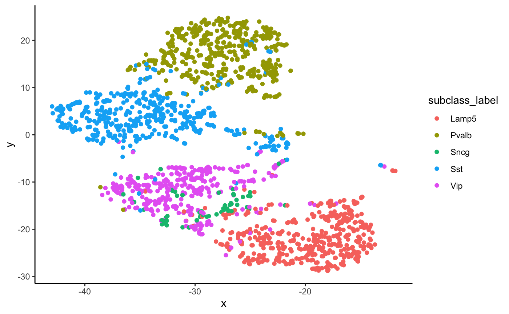
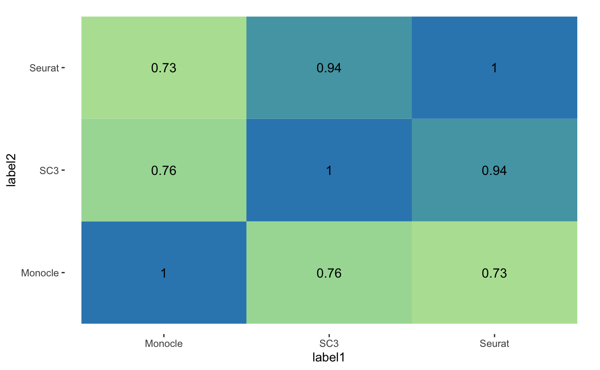

Dune.Rmdif (!requireNamespace("BiocManager", quietly = TRUE)) {
install.packages("BiocManager")
}
BiocManager::install("Dune")We use a subset of the Allen Smart-Seq nuclei dataset. Run ?Dune::nuclei for more details on pre-processing.
We have a dataset of \(1744\) cells, with the results from 3 clustering algorithms: Seurat3, Monocle3 and SC3. The Allen Institute also produce hand-picked cluster and subclass labels. Finally, we included the coordinates from a t-SNE representation, for visualization.
ggplot(nuclei, aes(x = x, y = y, col = subclass_label)) +
geom_point()
We can also see how the three clustering algorithm partitioned the dataset initially:
walk(c("SC3", "Seurat", "Monocle"), function(clus_algo){
df <- nuclei
df$clus_algo <- nuclei[, clus_algo]
p <- ggplot(df, aes(x = x, y = y, col = as.character(clus_algo))) +
geom_point(size = 1.5) +
# guides(color = FALSE) +
labs(title = clus_algo, col = "clusters") +
theme(legend.position = "bottom")
print(p)
})The adjusted Rand Index between the three methods can be computed.
As we can see, the ARI between the three methods is initially quite low.
We can now try to merge clusters with the Dune function. At each step, the algorithm will print which clustering label is merged (by its number, so 1~SC3 and so on), as well as the pair of clusters that get merged.
## [1] "SC3" "21" "20"
## [1] "Monocle" "20" "4"
## [1] "SC3" "11" "12"
## [1] "SC3" "22" "28"
## [1] "SC3" "11" "24"
## [1] "SC3" "22" "4"
## [1] "Seurat" "10" "2"The output from Dune is a list with four components:
names(merger)## [1] "initialMat" "currentMat" "merges" "ImpARI"initialMat is the initial matrix. of cluster labels. currentMat is the final matrix of cluster labels. merges is a matrix that recapitulates what has been printed above, while ImpARI list the ARI improvement over the merges.
We can now see how much the ARI has improved:
plotARIs(clusMat = merger$currentMat)
The methods now look much more similar, as can be expected.
We can also see how the number of clusters got reduced.
plotPrePost(merger)For SC3 for example, we can visualize how the clusters got merged:
ConfusionPlot(merger$initialMat[, "SC3"], merger$currentMat[, "SC3"]) +
labs(x = "Before merging", y = "After merging")Finally, the ARIImp function tracks mean ARI improvement as pairs of clusters get merged down.
ARItrend(merger)## R version 3.6.1 (2019-07-05)
## Platform: x86_64-apple-darwin15.6.0 (64-bit)
## Running under: macOS Catalina 10.15.4
##
## Matrix products: default
## BLAS: /Library/Frameworks/R.framework/Versions/3.6/Resources/lib/libRblas.0.dylib
## LAPACK: /Library/Frameworks/R.framework/Versions/3.6/Resources/lib/libRlapack.dylib
##
## locale:
## [1] en_US.UTF-8/en_US.UTF-8/en_US.UTF-8/C/en_US.UTF-8/en_US.UTF-8
##
## attached base packages:
## [1] stats graphics grDevices utils datasets methods base
##
## other attached packages:
## [1] Dune_0.99.15 purrr_0.3.3 knitr_1.28 tidyr_1.0.2
## [5] ggplot2_3.3.0 dplyr_0.8.5 RColorBrewer_1.1-2
##
## loaded via a namespace (and not attached):
## [1] mclust_5.4.5 Rcpp_1.0.4
## [3] gganimate_1.0.5 lattice_0.20-40
## [5] prettyunits_1.1.1 assertthat_0.2.1
## [7] rprojroot_1.3-2 digest_0.6.25
## [9] R6_2.4.1 GenomeInfoDb_1.22.0
## [11] backports_1.1.5 stats4_3.6.1
## [13] evaluate_0.14 pillar_1.4.3
## [15] zlibbioc_1.32.0 rlang_0.4.5
## [17] progress_1.2.2 rstudioapi_0.11
## [19] magick_2.3 S4Vectors_0.24.3
## [21] Matrix_1.2-18 rmarkdown_2.1
## [23] pkgdown_1.4.1 labeling_0.3
## [25] desc_1.2.0 BiocParallel_1.20.1
## [27] stringr_1.4.0 RCurl_1.98-1.1
## [29] munsell_0.5.0 DelayedArray_0.12.2
## [31] compiler_3.6.1 xfun_0.12
## [33] pkgconfig_2.0.3 BiocGenerics_0.32.0
## [35] htmltools_0.4.0 tidyselect_1.0.0
## [37] SummarizedExperiment_1.16.1 tibble_3.0.0
## [39] GenomeInfoDbData_1.2.2 IRanges_2.20.2
## [41] matrixStats_0.56.0 viridisLite_0.3.0
## [43] fansi_0.4.1 crayon_1.3.4
## [45] withr_2.1.2 MASS_7.3-51.5
## [47] bitops_1.0-6 grid_3.6.1
## [49] gtable_0.3.0 lifecycle_0.2.0
## [51] magrittr_1.5 scales_1.1.0
## [53] cli_2.0.2 stringi_1.4.6
## [55] farver_2.0.3 XVector_0.26.0
## [57] fs_1.3.2 ellipsis_0.3.0
## [59] vctrs_0.2.4 tools_3.6.1
## [61] Biobase_2.46.0 glue_1.3.2
## [63] tweenr_1.0.1 hms_0.5.3
## [65] parallel_3.6.1 yaml_2.2.1
## [67] colorspace_1.4-1 GenomicRanges_1.38.0
## [69] memoise_1.1.0